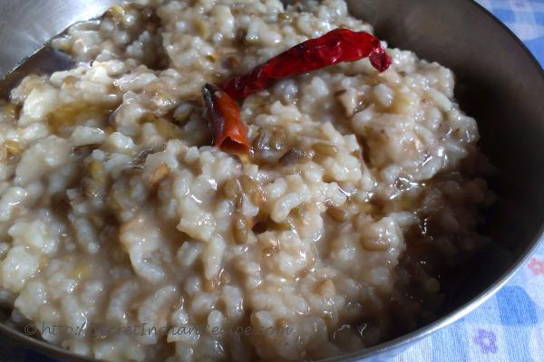

Home
Khicdi

Description
Khichdi is a simple healthy dish primarily popular is Western India.
Ingredients
- Soaked black gram (sabut urad dal)
- Rice
- Salt
Steps
- Put Pressure cooker on stove
- Add soaked black gram
- Add Rice
- Add salt
- Let it COOK! till 3 whisteles from pressure cooker
- Enjoy! with curd or curry